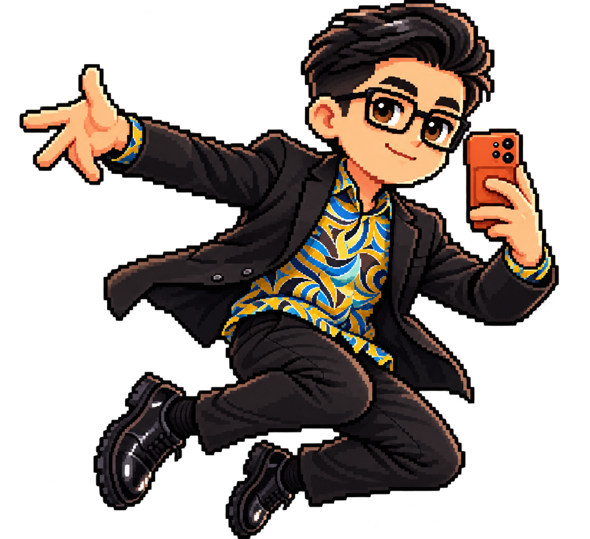

Bantu Cikgu Hareez meneroka akademi. Jumpa Sang Gajah untuk mendapatkan arahan misi rasmi, baca semua 6 stesen nota warna, dan buka cabaran 30 soalan!
🕹️ Komputer: guna kekunci anak panah atau WASD.
📱 Telefon/Tablet: guna butang arah di bawah peta.
❤️ Nyawa: 3⭐ Mata: 0📚 Nota Dipelajari: 0/6
📣 Arahan: Arahkan Cikgu Hareez datang ke Sang Gajah (🐘) untuk mendapatkan arahan!
🔴Primer
🟠Sekunder
🌈Penggenap
🔥Warna Panas
❄️Warna Sejuk
🎨Ton & Harmoni
❗
🐘
SANG GAJAH

';">
Pergi ke Sang Gajah dahulu untuk mengaktifkan stesen-stesen nota.
Soalan 1/30❤️ 3⭐ 0
🎨 UJIAN INTERAKTIF SANG GAJAH!
Sang Gajah minta anda mewarnakan Kelopak Bunga mengikut gabungan Warna Panas (Merah, Jingga, Kuning) atau Warna Sejuk! Pilih warna di bawah dan sentuh/klik bahagian lukisan.